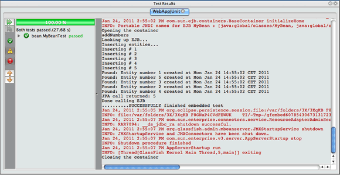

Apache NetBeans (incubating)
Apache NetBeans (incubating)Just released!
Usando o Container EJB Incorporado para Testar Aplicações Corporativas
| This tutorial needs a review. You can open a JIRA issue, or edit it in GitHub following these contribution guidelines. |
Esse tutorial demonstra como criar e executar testes JUnit para uma aplicação enterprise Java EE. Neste tutorial, você criará uma aplicação web com uma classe de entidade e um bean de sessão. Primeiro, você criará uma classe de teste JUnit para o bean de sessão e executará o teste no contêiner EJB incorporado. Em seguida, você adicionará uma classe de entidade ao projeto e modificará a classe de teste para adicionar um método de teste para a classe de entidade.
Exercícios do Tutorial

Figure 1. O conteúdo desta página se aplica ao NetBeans IDE 7.2, 7.3, 7.4 e 8.0
Para seguir este tutorial, são necessários os recursos e o software a seguir.
| Software ou Recurso | Versão Necessária |
|---|---|
Pacote Java EE 7.2, 7.3, 7.4, 8.0 |
|
versão 7 ou 8 |
|
GlassFish Server Open Source Edition |
3.1.x ou 4.x |
Observações.
-
Este tutorial requer o plug-in JUnit. Se você não tiver instalado o plug-in JUnit quando instalou o IDE, abra o Gerenciador de Plug-ins, selecione a guia plug-ins Disponíveis e instale o plug-in JUnit.
Pré-requisitos
Este tutorial pressupõe que você tenha algum conhecimento básico das tecnologias a seguir, ou alguma experiência de programação com elas:
-
Programação em Java
-
NetBeans IDE
Antes de começar este tutorial, você pode se familiarizar com os seguintes documentos.
Você pode fazer download de um arquivo compactado zip do projeto finalizado.
Testando um Bean de Sessão
Nesta sessão, você criará uma aplicação web Java EE simples que conterá uma classe de entidade e um bean de sessão.
Criando o Projeto
-
Selecione Arquivo > Novo Projeto (Ctrl-Shift-N; ⌘-Shift-N no Mac) no menu principal.
-
Na categoria Java Web, selecione Aplicação Web. Clique em Próximo.
-
Chame o projeto de WebAppJUnit e defina a localização do projeto.
-
Desmarque a opção Usar Pasta Dedicada, se ela estiver selecionada. Clique em Próximo.
-
Defina o servidor como GlassFish Server e defina a versão do Java EE para Java EE 6 Web ou Java EE 7 Web. Clique em Finalizar.
Criando o Bean de Sessão
Neste exercício, você criará um bean de sessão muito simples que contém um método que adiciona dois números.
-
Clique com o botão direito do mouse no projeto WebAppJUnit na janela Projetos e selecione Novo > Outro.
-
Selecione o Bean de Sessão na categoria Enterprise JavaBeans. Clique em Próximo.
-
Digite MyBean como o Nome EJB.
-
Insira bean como o Nome do Pacote.
-
Selecione Sem Estado para o Tipo de Sessão. Clique em Finalizar.
Quando você clica em Finalizar, a nova classe é aberta no editor.
-
No editor, adicione o seguinte método
addNumbersà classe.
@Stateless
public class MyBean {
*public int addNumbers(int numberA, int numberB) {
return numberA + numberB;
}*
}Observação. Ele não é necessário para adicionar uma anotação @LocalBean ou implementar uma interface neste tutorial. Por default, o bean expõe uma view sem interface quando nenhuma view é especificada explicitamente.
-
Salve as alterações.
Testando o Bean de Sessão
Neste exercício, você criará uma classe de teste para o bean de sessão que testará o método addNumbers . O IDE pode gerar os novos métodos de classe de teste e de teste esqueleto com base nos métodos da classe de destino.
-
Clique com o botão direito do mouse na classe
MyBeanna janela Projetos e selecione Ferramentas > Criar Testes. -
Selecione JUnit na lista drop-down Frameworks.
-
Use os valores default na caixa de diálogo Criar Testes. Clique em OK. image::images/create-tests-dialog.png[title="Caixa de diálogo Criar Testes"]
Observação. Na primeira vez que você criar um teste da unidade JUnit, deverá especificar a versão de JUnit. Selecione a JUnit 4.x na caixa de diálogo Selecionar Versão do JUnit e clique em Selecionar.
Quando você clica em OK, o IDE gera o arquivo MyBeanTest.java e abre a classe no editor.
Na janela Projetos, você pode ver que o IDE gerou a classe de teste no nó Testar Pacotes. Por default, o IDE gera um método de teste esqueleto na classe de teste que chama javax.ejb.embeddable.EJBContainer.createEJBContainer() para criar uma instância do contêiner EJB. O método createEJBContainer() é um dos métodos na classe + EJBContainer + que faz parte da API integrada do EJB 3.1.
Se você expandir o nó Bibliotecas de Teste na janela Projetos, poderá ver que o IDE adicionou automaticamente o GlassFish Server (contêiner incorporado) e o JUnit 4.x como bibliotecas de teste. Se você expandir a biblioteca do GlassFish Server, verá que a biblioteca contém o glassfish-embedded-static-shell.jar .

Figure 2. Estrutura do projeto na janela Projetos
Observação. O JAR glassfish-embedded-static-shell.jar não contém os códigos-fonte do contêiner EJB incorporado. O JAR glassfish-embedded-static-shell.jar requer uma instalação local do GlassFish. O classpath para a instalação local do GlassFish é determinado pelo servidor de destino do projeto. Você pode alterar o servidor de destino na caixa de diálogo Propriedades do projeto.
-
Modifique o método de teste esqueleto gerado para especificar valores para
numberA,numberBeexpResulte remova a chamada default para falha.
@Test
public void testAddNumbers() throws Exception {
System.out.println("addNumbers");
*int numberA = 1;
int numberB = 2;*
EJBContainer container = javax.ejb.embeddable.EJBContainer.createEJBContainer();
MyBean instance = (MyBean)container.getContext().lookup("java:global/classes/MyBean");
*int expResult = 3;*
int result = instance.addNumbers(numberA, numberB);
assertEquals(expResult, result);
container.close();
}-
Clique com o botão direito do mouse no projeto na janela Projetos e selecione Testar.
Quando você executa o teste, a janela Resultados do Teste é aberta no IDE e exibe o andamento e os resultados do teste.

Figure 3. Janela Resultados do Teste
Você verá uma saída semelhante à seguinte na janela de Saída:
Testsuite: bean.MyBeanTest
addNumbers
...
Tests run: 1, Failures: 0, Errors: 0, Time elapsed: 31.272 sec
------------- Standard Output ---------------
addNumbers
...
------------- ---------------- ---------------
test-report:
test:
BUILD SUCCESSFUL (total time: 35 seconds)Modificando o Teste para Especificar Propriedades do Container
Quando você usou o assistente Criar Testes, o IDE gerou uma classe de teste esqueleto default que continha código para iniciar o contêiner EJB. Neste exercício, você modificará o código gerado que inicia o contêiner para permitir a especificação de propriedades adicionais para a instância do contêiner incorporado.
-
Adicione o seguinte código (em negrito) à classe de teste.
@Test
public void testAddNumbers() throws Exception {
System.out.println("addNumbers");
int numberA = 1;
int numberB = 2;
// Create a properties map to pass to the embeddable container:
*Map<String, Object> properties = new HashMap<String, Object>();*
// Use the MODULES property to specify the set of modules to be initialized,
// in this case a java.io.File
*properties.put(EJBContainer.MODULES, new File("build/jar"));*
// Create the container instance, passing it the properties map:
EJBContainer container = javax.ejb.embeddable.EJBContainer.createEJBContainer(*properties*);
// Create the instance using the container context to look up the bean
// in the directory that contains the built classes
MyBean instance = (MyBean) container.getContext().lookup("java:global/classes/MyBean");
int expResult = 3;
// Invoke the addNumbers method on the bean instance:
int result = instance.addNumbers(numberA, numberB);
assertEquals(expResult, result);
// Close the embeddable container:
container.close();
}-
Clique com o botão direito do mouse no editor e selecione Corrigir Importações (Alt-Shift-I; ⌘-Shift-I no Mac) para adicionar instruções de importação para
java.util.HashMapejava.util.Map. -
Execute novamente o teste para confirmar se o teste modificado funciona e se o contêiner foi criado corretamente.
Você pode clicar no botão Reexecutar na janela Resultados do Teste.
Usando Anotações @BeforeClass e @AfterClass
Neste exercício, você modificará a classe de teste para criar métodos individuais para criar e encerrar a instância do contêiner. Isso pode ser útil quando você desejar executar vários testes que podem usar a mesma instância do contêiner. Dessa forma, não é necessário abrir e fechar uma instância do contêiner para cada teste e criar, em vez disso, uma instância que é criada de os testes serem executados e fechada depois de todos os testes terem sido concluídos.
Neste exercício, você moverá o código que cria o contêiner EJB para o método setUpClass . O método setUpClass é anotado com @BeforeClass que é usado para indicar um método que será executado primeiro, antes dos outros métodos na classe de teste. Neste exemplo, a instância do contêiner será criada antes do método de teste testAddNumbers e o contêiner existirá até que seja encerrado.
De forma semelhante, você moverá o código que encerra o contêiner para o método tearDownClass que é anotado com @AfterClass .
-
Adicione o campo a seguir à classe de teste.
private static EJBContainer container;-
Copie o código que cria o contêiner do método de teste
testAddNumberspara o métodosetUpClasse
@BeforeClass
public static void setUpClass() *throws Exception* {
*Map<String, Object> properties = new HashMap<String, Object>();
properties.put(EJBContainer.MODULES, new File("build/jar"));
container = EJBContainer.createEJBContainer(properties);
System.out.println("Opening the container");*
}-
Copie o código que fecha o contêiner do método de teste
testAddNumberspara o métodotearDownClass.
@AfterClass
public static void tearDownClass() *throws Exception* {
*container.close();
System.out.println("Closing the container");*
}-
Remova o código redundante do método
testAddNumbers. Salve as alterações.
A classe de teste deve se parecer com o seguinte.
public class MyBeanTest {
private static EJBContainer container;
public MyBeanTest() {
}
@BeforeClass
public static void setUpClass() throws Exception {
Map<String, Object> properties = new HashMap<String, Object>();
properties.put(EJBContainer.MODULES, new File("build/jar"));
container = EJBContainer.createEJBContainer(properties);
System.out.println("Opening the container");
}
@AfterClass
public static void tearDownClass() throws Exception {
container.close();
System.out.println("Closing the container");
}
@Before
public void setUp() {
}
@After
public void tearDown() {
}
/**
* Test of addNumbers method, of class MyBean.
*/
@Test
public void testAddNumbers() throws Exception {
System.out.println("addNumbers");
int numberA = 1;
int numberB = 2;
// Create the instance using the container context to look up the bean
// in the directory that contains the built classes
MyBean instance = (MyBean) container.getContext().lookup("java:global/classes/MyBean");
int expResult = 3;
// Invoke the addNumbers method on the bean instance:
int result = instance.addNumbers(numberA, numberB);
assertEquals(expResult, result);
}
}Caso você execute novamente o teste para confirmar se o contêiner é criado e fechado corretamente, verá uma saída semelhante à seguinte na janela Resultados do Teste.

Figure 4. Janela Resultados do Teste
Você pode ver que o método setUpClass foi executado antes do teste addNumbers e imprimiu "Abrindo o contêiner".
Testando uma Classe de Entidade
Nesta sessão, você criará uma classe de entidade e unidade de persistência, e modificará o bean de sessão para injetar o gerenciador de entidades e acessar as entidades. Você adicionará um método simples à nova classe de entidade que imprime o número de id da entrada na saída. Em seguida, você adicionará alguns métodos simples ao bean de sessão para criar e verificar entradas no banco de dados.
Criando a Classe de Entidade
Nesta seção, você usará o assistente Nova Classe de Entidade para criar uma classe de entidade e uma unidade de persistência com os detalhes de conexão do banco de dados.
-
Clique com o botão direito do mouse no projeto WebAppJUnit na janela Projetos e selecione Novo > Outro.
-
Selecione a Classe de Entidade na categoria Persistência. Clique em Próximo.
-
Digite SimpleEntity como o Nome da Classe.
-
Selecione bean na lista drop-down Pacote.
-
Digite int como o Tipo de Chave Primária. Clique em Próximo.
-
Use o Nome e o Provedor da Unidade de Persistência Default.
-
Selecione
jdbc/samplecomo a fonte de dados e Soltar e Criar como a estratégia. Clique em Finalizar. image::images/create-entity-wizard.png[title="Caixa de diálogo Criar Classe de Entidade"]
Quando você clica em Finalizar, a nova classe de entidade é aberta no editor. Se você expandir o nó Arquivos de Configuração na janela Projetos, verá que o IDE gerou automaticamente o arquivo persistence.xml que define as propriedades da unidade de persistência WebAppJUnitPU .
-
No editor, adicione o campo privado a seguir à classe de entidade.
private String name;-
Clique com o botão direito do mouse no Editor de Código-Fonte e selecione Inserir Código (Alt-Insert; Ctrl-I no Mac) e selecione Getter e Setter para abrir a caixa de diálogo Gerar Getters e Setters.
-
Selecione o campo
namena caixa de diálogo. Clique em Gerar. -
Adicione o seguinte método à classe.
public SimpleEntity(int id) {
this.id = id;
name = "Entity number " + id + " created at " + new Date();
}-
Use as anotações
@NamedQueriese@NamedQuerypara criar uma consulta SQL nomeada.
@Entity
*@NamedQueries({@NamedQuery(name = "SimpleEntity.findAll", query = "select e from SimpleEntity e")})*
public class SimpleEntity implements Serializable {-
Crie um construtor default.
Você pode clicar no ícone de sugestão exibido na medianiz, próximo à declaração de classe, se quiser que o IDE gere o construtor para você.
-
Corrija suas importações para adicionar instruções de importação para
javax.persistence.NamedQueries,javax.persistence.NamedQueryejava.util.Date. Salve as alterações.
Além do código default gerado, a classe de entidade agora deve ser semelhante a:
package bean;
import java.io.Serializable;
import java.util.Date;
import javax.persistence.Entity;
import javax.persistence.GeneratedValue;
import javax.persistence.GenerationType;
import javax.persistence.Id;
import javax.persistence.NamedQueries;
import javax.persistence.NamedQuery;
@Entity
@NamedQueries({@NamedQuery(name = "SimpleEntity.findAll", query = "select e from SimpleEntity e")})
public class SimpleEntity implements Serializable {
private static final long serialVersionUID = 1L;
@Id
@GeneratedValue(strategy = GenerationType.AUTO)
private int id;
private String name;
public SimpleEntity() {
}
public String getName() {
return name;
}
public void setName(String name) {
this.name = name;
}
public SimpleEntity(int id) {
this.id = id;
name = "Entity number " + id + " created at " + new Date();
}
...
}Modificando o Bean de Sessão
Neste exercício, você editará o bean de sessão MyBean para adicionar métodos para inserir e recuperar dados para a tabela do banco de dados.
-
Abra
MyBean.javano editor. -
Clique com o botão direito do mouse no editor, selecione Inserir Código (Alt-Insert; Ctrl-I no Mac) e selecione Usar Gerenciador de Entidades no menu pop-up.
Quando você tiver selecionado Usar Gerenciador de Entidades, o IDE terá adicionado o código a seguir à classe para injetar o gerenciador de entidades. Você pode ver que o nome da unidade de persistência foi gerado automaticamente.
@PersistenceContext(unitName="WebAppJUnitPU")
private EntityManager em;-
Adicione os seguintes métodos
verifyeinsert.
@PermitAll
public int verify() {
String result = null;
Query q = em.createNamedQuery("SimpleEntity.findAll");
Collection entities = q.getResultList();
int s = entities.size();
for (Object o : entities) {
SimpleEntity se = (SimpleEntity)o;
System.out.println("Found: " + se.getName());
}
return s;
}
@PermitAll
public void insert(int num) {
for (int i = 1; i <= num; i++) {
System.out.println("Inserting # " + i);
SimpleEntity e = new SimpleEntity(i);
em.persist(e);
}
}-
Corrija suas importações para importar o
javax.persistence.Querye salve as alterações.
Testando a Classe de Entidade
Neste exercício, você editará a classe de teste para adicionar um método para testar se a aplicação pode procurar o EJB e se os métodos insert e verify estão se comportando corretamente.
-
Inicie o banco de dados JavaDB.
-
Abra a classe de teste
MyBeanTest.javano editor. -
Edite a classe de teste para adicionar o seguinte método de teste
testInsert.
@Test
public void testInsert() throws Exception {
// Lookup the EJB
System.out.println("Looking up EJB...");
MyBean instance = (MyBean) container.getContext().lookup("java:global/classes/MyBean");
System.out.println("Inserting entities...");
instance.insert(5);
int res = instance.verify();
System.out.println("JPA call returned: " + res);
System.out.println("Done calling EJB");
Assert.assertTrue("Unexpected number of entities", (res == 5));
System.out.println("..........SUCCESSFULLY finished embedded test");
}-
Na janela Projetos, clique com o botão direito do mouse no nó do projeto e escolha Testar no menu pop-up.
A janela Resultados do teste será aberta e exibirá uma saída semelhante à seguinte.

Figure 5. A janela Resultados do Teste depois da adição do teste testInsert
Você pode ver o andamento dos testes e a ordem na qual eles foram executados nas mensagens impressas que foram adicionadas à classe de teste.
Agora que você tem um teste para seu bean de sessão e sabe que a conexão de sua classe de entidade funciona, pode começar a codificar uma interface web para a aplicação.
Fazendo Download do Projeto da Solução
Você pode fazer o download da solução para este projeto como um projeto das seguintes formas.
-
Faça download de um arquivo compactado zip do projeto finalizado.
-
Faça o check-out do código-fonte do projeto das Amostras do NetBeans ao executar as etapas a seguir:
-
Escolha Equipe > Subversion > Efetuar check-out no menu principal.
-
Na caixa de diálogo Check-out, insira o URL de Repositório a seguir:
https://svn.netbeans.org/svn/samples~samples-source-codeClique em Próximo. -
Clique em Procurar para abrir a caixa de diálogo Procurar Pastas do Repositório.
-
Expanda o nó raiz e selecione samples/javaee/WebAppJUnit. Clique em OK.
-
Especifique a Pasta Local para o códigos-fonte (a pasta local precisa estar vazia).
-
Clique em Finalizar.
-
Quando você clica em Finalizar, o IDE inicializa a pasta local como um repositório Subversion e verifica os códigos-fonte do projeto.
-
Clique em Abrir Projeto na caixa de diálogo exibida quando o check-out for concluído.
Observações.
-
É necessário um cliente Subversion para verificar os códigos-fonte. Para saber mais sobre a instalação do Subversion, consulte a seção Configurando o Subversion no Guia do Subversion no NetBeans IDE.
Consulte Também
Para obter mais informações sobre o uso do NetBeans IDE para desenvolver aplicações Java EE, consulte os seguintes recursos:
Você pode encontrar mais informações sobre o uso do Enterprise Beans EJB 3.1 no Tutorial do Java EE 6.
Para enviar comentários e sugestões, obter suporte e se manter informado sobre os mais recentes desenvolvimentos das funcionalidades de desenvolvimento do Java EE do NetBeans IDE, inscreva-se na lista de correspondência de nbj2ee.